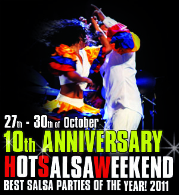
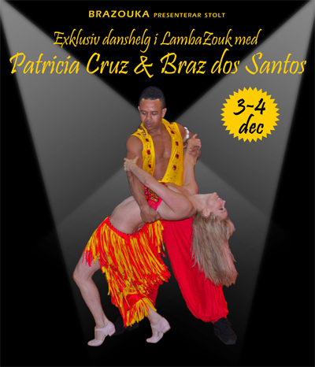

Hot Salsa Weekend
27-30 oktober
Snart är det dags att värma upp Stockholm med höstens hetaste dansfest
– Hot Salsa Weekend 2011!
Hot Salsa Weekend pågår 27-30 oktober på Debaser Medis och detta år firar de 10-årsjubileum!
Det blir het dans långt in på nätterna och inspirerande workshops dagtid, samt inbjudna artister och instruktörer i absolut världsklass!
Elever som anmäler sig via oss får rabatt! Kontakta oss för mer information om hur du går tillväga för att erhålla denna rabatt.

Mer information om Hot Salsa Weekend finner du på www.hotsalsaweekend.com
Festival A lo Cubano
25-27 november
I slutet av november anordnas en salsafestival med kubanska förtecken i Stockholm!
A lo Cubano är ett evenemang för alla salsadansare som är intresserade av dans och kubansk musik och även andra latinamerikanska rytmer. Festivalen startade för 3 år sen i Sundsvallstrakterna men i år flyttas den till Stockholm.
Det blir en helg full av mycket dans och musik. 52 timmar workshops och 3 stora fester från fredag till söndag.
♫ ♪ Brazouka kommer ha workshops under lördag och söndag samt uppträda på lördag! ♫ ♪
Mer information om Festival A lo Cubano finner du på www.baila.se/festival

För första gången gästar det celebra dansparet Stockholm för en exklusiv helg med workshops och fester i Lambazouk på BRAZOUKAs dansskola! Deras dans är både inspirerande och energifull och de räknas som ett av de mest eftertraktade dansparen på zoukkongresser världen över. För nybörjare såväl som avancerad dansare – missa inte denna fullspäckade helg!
♪♫ HELGENS SCHEMA ♫♪
Lördag 4 dec:Workshop 1 16.00-17.00 Nyb 1
Workshop 2 17.15-18.15 Nyb 2
Workshop 3 18.30-19.30 Forts/Avanc
Fest 20.00-23.00
Söndag 4 dec:
Workshop 4 15.00-16.00 Forts/Avanc
Workshop 5 16.15-17.15 Forts/Avanc
Workshop 6 17.30-18.30 Men's & ladies' styling – alla nivåer
Fest 19.00-21.00
Plats: S.M.A.C (Stockholm Martial Arts Center)
Åsögatan 153, T-bana Medborgarplatsen
♪♫ PRISER ♫♪
1 Workshop 150 krFest Lördag 100 kr
Fest Söndag 70 kr
Paketpris NYBÖRJARE (workshop 1, 2 & 6) + fester 500 kr
Paketpris FORTS/AVANC (workshop 3, 4, 5 & 6) + fester 650 kr
ALL INCLUSIVE inkl. alla workshops + fester 750 kr
♪♫ ANMÄLAN ♫♪
Anmälan sker till info@brazouka.com. Begränsat antal platser, så först till kvarn gäller!~ BRAS DOS SANTOS ~
Braz var en av dansarna bakom den världsberömda Lambadagruppen Kaoma som 1989 gjorde lambadan känd över hela världen. Han var Kaomas huvuddansare från 1989 till 1994 och turnerade runt i 64 länder. Han grundade Lambada (känd numera som LambaZouk i flera länder), en brasiliansk pardans, i Porto Seguro, Brasilien. Braz har instruerat och uppträtt på många stora dansevent samt vunnit många tävlingar, bland annat 1:a pris i den årliga nationella lambadatävlingen i Brasilien hela 7 gånger!Braz undervisar och uppträder på världskongresser på regelbunden basis, men är numera bosatt i London där han driver sin egen lambazouk-klubb. Man kan inte annat än att smittas av hans inspirerande dansstil och energi på kurserna och dansgolvet!
~ PATRICIA CRUZ ~
Patricia betraktas som en av de främsta dansarna i Lambazouk. Hon började som dansare i Porto Seguro, Bahía, där hon bodde i mer än tio år. Sin danskarriär initierade hon på Axé Moi och Reggae Night, två välkända dansställen i Porto Seguro. Tillsammans med Braz gav hon lektioner och uppträdde i Lambada i Buenos Aires under 90-talet. Patricia har även varit Didis (Braz bror) danspartner under flera år. Patricias dansstil karaktäriseras av elegans och hon brukar liknas vid en dansande ängel. Sedan sex år tillbaka undervisar och uppträder hon i London, där hon är bosatt.♪♫ VARMT VÄLKOMNA ♫♪
Brasilianska danskvällar – Zouksocials
Vi ordnar regelbundet danskvällar då våra elever och andra dansintresserade kan komma och dansa! Kvällen startar alltid med en workshop som varar en halvtimme och sedan fylls lokalen med den senaste musiken från zoukklubbar i England, Argentina, Holland och Brasilien!
♫ ♪ Dansgolvet är ert! ♪ ♫
Planerade tillfällen hösten 2011:
22 okt
5 nov
19 nov
Mer information om dessa tillfällen följer.
VARMT VÄLKOMNA!